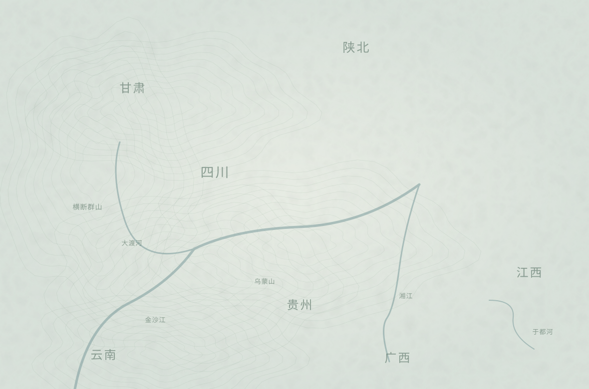

从于都河岸，走向更远的山河
点亮一个站点，翻开一页相册。

故事路线概括示意 · 非完整行军轨迹可拖动地图；点亮的站点可以进入。
江西于都1934年10月
于都启程
走过的路和作过的选择都会记下。
画面与声音已暂停
同 行
于都五段、雪山两段镜头保留影片原声。其余片段用图片、环境底声与无声文字呈现，不另加人物配音。人物音量控制影片，环境音量控制各地的环境声音。
这里只记录你走过的分支。回看时，画面和声音暂停。
这是一段以长征为背景的地图式剧情体验。你以新战士“小满”的视角，在路上认识陈禾和更多同行者。
当前可走完于都、湘江、遵义、夹金山、草地、吴起六站，沿途历史转场与1936年会师尾声。人物与场景为AI创作的虚构情境，不是历史实录。七段镜头保留影片原声；心声、地点和旁白以无声文字呈现。
本体验不以分数评价选择。地图是叙事示意，不是精确行军轨迹。